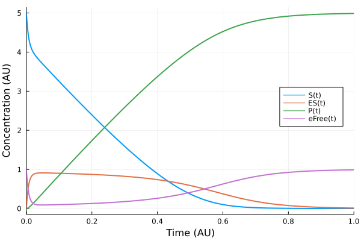
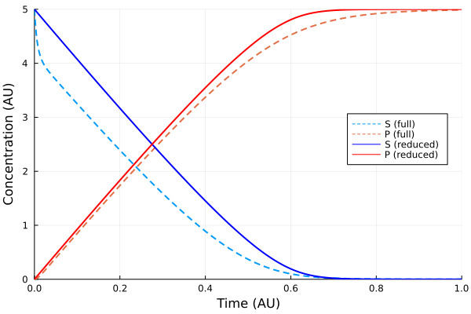
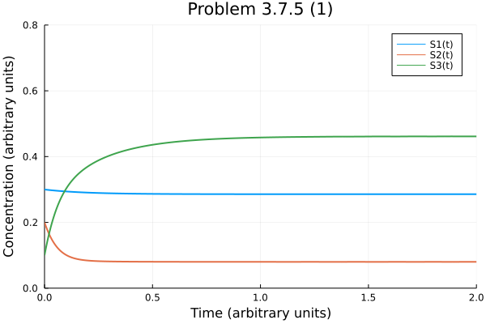
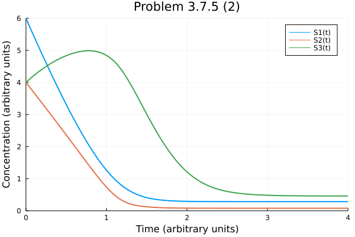
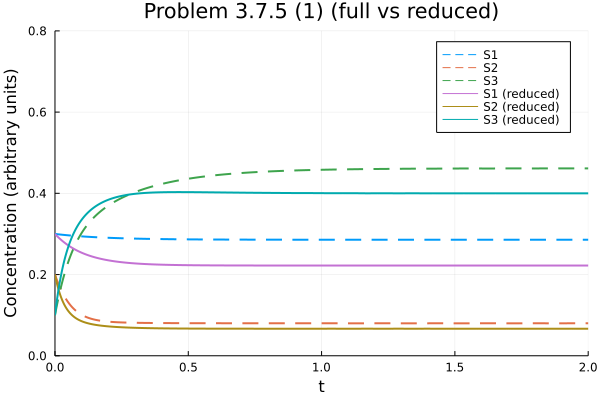
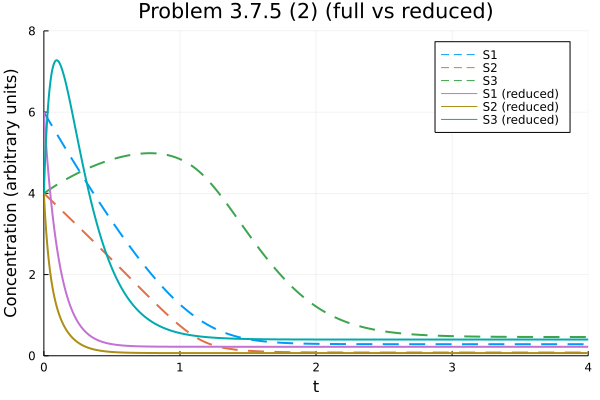

Chapter 3
Contents
Chapter 3#
Figure 3.03 Michaelis-Menten kinetics#
using DifferentialEquations
using ModelingToolkit
using Plots
Plots.gr(lw=2)
Plots.GRBackend()
hill(x, k) = x / (x + k)
hill(x, k, n) = hill(x^n, k^n)
hill (generic function with 2 methods)
@parameters eT k1 km1 k2
@variables t S(t) ES(t) P(t) eFree(t) v1(t) v2(t)
D = Differential(t)
(::Differential) (generic function with 2 methods)
@named fullSys = ODESystem([
eFree ~ eT - ES,
v1 ~ k1 * S * eFree - km1 * ES,
v2 ~ k2 * ES,
D(S) ~ -v1,
D(ES) ~ v1 - v2,
D(P) ~ v2
])
\[\begin{split} \begin{align}
\frac{dS(t)}{dt} =& - \mathrm{v1}\left( t \right) \\
\frac{dES(t)}{dt} =& - \mathrm{v2}\left( t \right) + \mathrm{v1}\left( t \right) \\
\frac{dP(t)}{dt} =& \mathrm{v2}\left( t \right) \\
\mathrm{eFree}\left( t \right) =& eT - \mathrm{ES}\left( t \right) \\
\mathrm{v1}\left( t \right) =& - km1 \mathrm{ES}\left( t \right) + k1 S\left( t \right) \mathrm{eFree}\left( t \right) \\
\mathrm{v2}\left( t \right) =& k2 \mathrm{ES}\left( t \right)
\end{align}
\end{split}\]
fullSys = structural_simplify(fullSys)
\[\begin{split} \begin{align}
\frac{dS(t)}{dt} =& - \mathrm{v1}\left( t \right) \\
\frac{dES(t)}{dt} =& - \mathrm{v2}\left( t \right) + \mathrm{v1}\left( t \right) \\
\frac{dP(t)}{dt} =& \mathrm{v2}\left( t \right)
\end{align}
\end{split}\]
# Apply QSSA on the ES complex to somplify the model
@named simpSys = ODESystem([
D(S) ~ -k2 * eT * hill(S, (km1 + k2) / k1),
])
\[ \begin{align}
\frac{dS(t)}{dt} =& \frac{ - eT k2 S\left( t \right)}{\frac{k2 + km1}{k1} + S\left( t \right)}
\end{align}
\]
u0 = [S => 5.0, ES => 0.0, P => 0.0]
tend = 1.0
params = [eT => 1.0, k1 => 30.0, km1 => 1.0, k2 => 10.0]
sol = solve(ODEProblem(fullSys, u0, tend, params))
retcode: Success
Interpolation: specialized 4th order "free" interpolation, specialized 2nd order "free" stiffness-aware interpolation
t: 40-element Vector{Float64}:
0.0
6.665333466693315e-6
7.331866813362645e-5
0.00048642648778993874
0.001246310413218641
0.002255916309079525
0.0036389198801181095
0.00545583363850392
0.007824959232785294
0.010840766550417302
0.014621903142810278
0.019277403182029782
0.02494507816841159
⋮
0.48521164547537693
0.540201092224572
0.5962935027711986
0.6498572521804434
0.6992361514843274
0.7455747283559686
0.7903699610737671
0.8349926147758184
0.8806910467990131
0.9286579589754566
0.9801092099749458
1.0
u: 40-element Vector{Vector{Float64}}:
[5.0, 0.0, 0.0]
[4.999000802751873, 0.000999163942258781, 3.330586857606668e-8]
[4.989074749914229, 0.010921237104096317, 4.012981675171883e-6]
[4.930127947317353, 0.06969993676229858, 0.00017211592034861722]
[4.832226261833521, 0.16669487025589977, 0.0010788679105792774]
[4.720095603915227, 0.276571299767534, 0.0033330963172395283]
[4.593086952160523, 0.39887587512202227, 0.008037172717454948]
[4.461543547981366, 0.5219980786041243, 0.01645837341451019]
[4.332646083947653, 0.6370812655352537, 0.0302726505170938]
[4.2146257462090055, 0.7343117830375187, 0.05106247075347632]
[4.111199781164874, 0.8084431778308703, 0.08035704100425639]
[4.022104087704659, 0.8586065157497812, 0.11928939654556033]
[3.94273013116537, 0.8883632044987431, 0.1689066643358876]
⋮
[0.4330972891093158, 0.6154853137358121, 3.951417397154873]
[0.23210789757958253, 0.5069090684960212, 4.260983033924397]
[0.10688422093961325, 0.3824409926320726, 4.510674786428315]
[0.04626413910025967, 0.26918678316701966, 4.684549077732722]
[0.020977113980381188, 0.18357576649969576, 4.795447119519925]
[0.01041495421874948, 0.12369158655992446, 4.865893459221328]
[0.005656469763014638, 0.0827625067352505, 4.911581023501737]
[0.0032796749721159136, 0.05484217980196184, 4.941878145225925]
[0.0019694264524599617, 0.03575368841431783, 4.962276885133225]
[0.0011916710708071753, 0.02273525651595728, 4.976073072413238]
[0.000710181002696924, 0.013958545194631931, 4.985331273802673]
[0.0005834152169982695, 0.011555343089233618, 4.98786124169377]
p1 = plot(sol, vars=[S, ES, P, eFree], xlabel="Time (AU)", ylabel="Concentration (AU)", legend=:right)

solsimp = solve(ODEProblem(simpSys, u0, tend, params))
retcode: Success
Interpolation: specialized 4th order "free" interpolation, specialized 2nd order "free" stiffness-aware interpolation
t: 15-element Vector{Float64}:
0.0
0.08829951015219592
0.29677254913999207
0.5000004817918403
0.6196473926569502
0.6670104402879965
0.7099275072236977
0.7465737552769465
0.7827003170612313
0.8170029132927924
0.8515324894037792
0.886672833050339
0.9240249076586415
0.9646817171699882
1.0
u: 15-element Vector{Vector{Float64}}:
[5.0]
[4.182468228248958]
[2.3146741513235356]
[0.7140967034844039]
[0.13296503742668356]
[0.04630251318211275]
[0.01563176152085844]
[0.005910624946093232]
[0.0022299119031116642]
[0.0008784935956950156]
[0.0003432014396268349]
[0.00013175528732374206]
[4.7615961869066056e-5]
[1.5733009181704544e-5]
[6.007498451479797e-6]
p2 = plot(sol, vars=[1, 3], line=(:dash), label=["S (full)" "P (full)"])
plot!(p2, solsimp, line=(:blue), lab="S (reduced)")
plot!(p2, solsimp, vars=((t, s)->(t, 5.0 - s), 0, 1), line=(:red), lab="P (reduced)")
plot!(p2, xlabel="Time (AU)", ylabel="Concentration (AU)", xlims=(0.0,1.0), ylims=(0.0,5.0), legend = :right)

Problem 3.7.5 Reduced Michaelis-Menten#
using Plots
using DifferentialEquations
using ModelingToolkit
Plots.gr(lw=2, fmt=:png)
Plots.GRBackend()
# Convenience functions
hill(x, k) = x / (x + k)
hill(x, k, n) = hill(x^n, k^n)
reducedmm(x, k) = x / k
reducedmm (generic function with 1 method)
@parameters v_0 v_m1 v_m2 v_m3 Km_1 Km_2 Km_3
@variables t S1(t) S2(t) S3(t) v1(t) v2(t) v3(t)
D = Differential(t)
(::Differential) (generic function with 2 methods)
eqsFull = [ v1 ~ v_m1 * hill(S1, Km_1),
v2 ~ v_m2 * hill(S2, Km_2),
v3 ~ v_m3 * hill(S3, Km_3),
D(S1) ~ v_0 - v1,
D(S2) ~ v1 - v2,
D(S3) ~ v2 - v3]
@named fullsys = ODESystem(eqsFull)
fullSys = structural_simplify(fullsys)
\[\begin{split} \begin{align}
\frac{dS1(t)}{dt} =& v_{0} - \mathrm{v1}\left( t \right) \\
\frac{dS2(t)}{dt} =& - \mathrm{v2}\left( t \right) + \mathrm{v1}\left( t \right) \\
\frac{dS3(t)}{dt} =& - \mathrm{v3}\left( t \right) + \mathrm{v2}\left( t \right)
\end{align}
\end{split}\]
eqsRe = [ v1 ~ v_m1 * S1 / Km_1,
v2 ~ v_m2 * S2 / Km_2,
v3 ~ v_m3 * S3 / Km_3,
D(S1) ~ v_0 - v1,
D(S2) ~ v1 - v2,
D(S3) ~ v2 - v3]
@named reSys = ODESystem(eqsRe)
reSys = structural_simplify(reSys)
\[\begin{split} \begin{align}
\frac{dS1(t)}{dt} =& v_{0} - \mathrm{v1}\left( t \right) \\
\frac{dS2(t)}{dt} =& - \mathrm{v2}\left( t \right) + \mathrm{v1}\left( t \right) \\
\frac{dS3(t)}{dt} =& - \mathrm{v3}\left( t \right) + \mathrm{v2}\left( t \right)
\end{align}
\end{split}\]
u0 = [S1 => 0.3, S2 => 0.2, S3 => 0.1]
tend = 2.0
params = [v_0 => 2, v_m1 => 9, v_m2 => 12, v_m3 => 15, Km_1 => 1.0, Km_2 => 0.4, Km_3 => 3.0]
7-element Vector{Pair{Num, Float64}}:
v_0 => 2.0
v_m1 => 9.0
v_m2 => 12.0
v_m3 => 15.0
Km_1 => 1.0
Km_2 => 0.4
Km_3 => 3.0
sol1 = solve(ODEProblem(fullSys, u0, tend, params))
plot(sol1, ylims=(0.0, 0.8),
title="Problem 3.7.5 (1)",
xlabel="Time (arbitrary units)",
ylabel="Concentration (arbitrary units)")

u1 = [S1=>6.0, S2=>4.0, S3=>4.0]
sol2 = solve(ODEProblem(fullSys, u1, 4.0, params))
plot(sol2, ylims=(0.0, 6.0),
title="Problem 3.7.5 (2)",
xlabel="Time (arbitrary units)",
ylabel="Concentration (arbitrary units)")

sol3 = solve(ODEProblem(reSys, u0, tend, params))
p3 = plot(sol1, ylims=(0.0, 0.8),
title="Problem 3.7.5 (1) (full vs reduced)",
xlabel="Time (arbitrary units)",
ylabel="Concentration (arbitrary units)",
labels=["S1 " "S2 " "S3 "], ls=:dash)
plot!(p3, sol3, labels=["S1 (reduced)" "S2 (reduced)" "S3 (reduced)"] )

sol4 = solve(ODEProblem(reSys, u1, 4.0, params))
p4 = plot(sol2, ylims=(0.0, 8.0),
title="Problem 3.7.5 (2) (full vs reduced)",
xlabel="Time (arbitrary units)",
ylabel="Concentration (arbitrary units)",
labels=["S1 " "S2 " "S3 "], ls=:dash)
plot!(p4, sol4, labels=["S1 (reduced)" "S2 (reduced)" "S3 (reduced)"] )
